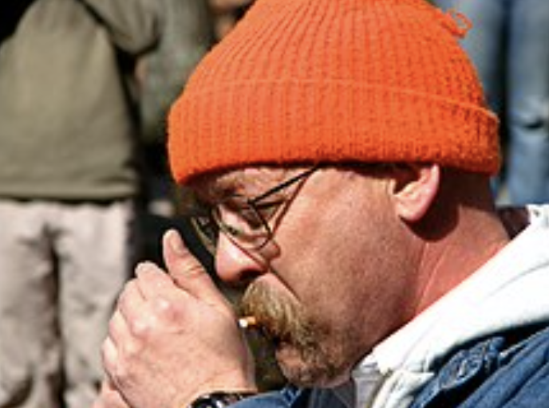
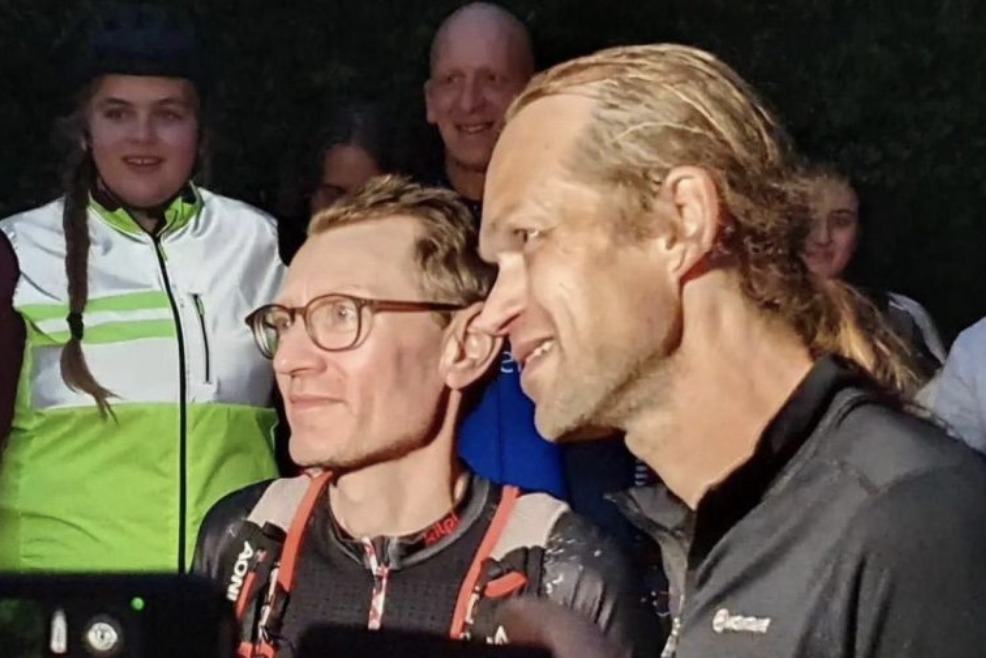
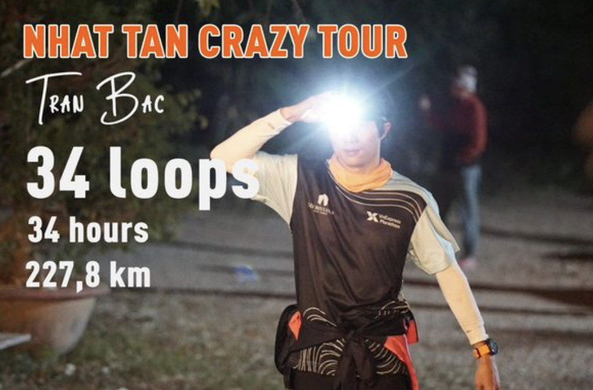

Big Dog’s Backyard Ultra, còn được gọi là Big’s Backyard Ultra hoặc Backyard Ultra được phát minh bởi Gary “Lazarus Lake” Cantrell ở Bell Buckle, Tennessee, Hoa Kỳ vào năm 2012, ông cũng là Giám đốc đường chạy của giải Ultral khắc nghiệt nhất hành tinh Barkley Marathons nổi tiếng và gần đây hơn là CRAW – giải chạy đồng đội vòng quanh thế giới hơn 30.000 miles.
Kể từ khi thành lập, Backyard Ultras đã xuất hiện trên khắp thế giới, đặc biệt trở nên phổ biến trong thời kỳ đại dịch Covid.
1. Backyard là gì?
Backyard Ultra là cuộc thi siêu Marathon trong đó các vận động viên phải chạy liên tục quãng đường 6,7Km trong vòng chưa đầy một giờ trong nhiều giờ nhất có thể. Khi hoàn thành mỗi vòng đua, thời gian còn lại của 1 giờ đó thường được sử dụng để phục hồi cho vòng tiếp theo.
Backyard không có kết thúc được xác định trước theo quãng đường hay thời gian như các cuộc đua khác. Người chiến thắng được xác định bằng cách trở thành người cuối cùng chạy các vòng. Nếu không có người chạy nào hoàn thành vòng cuối cùng thì sẽ không có người chiến thắng.
2. Người bắt đầu cho Backyard là ai?

Lazarus Lake hay Gary Cantrell thường gọi là Laz hay Lake là một vận động viên marathon siêu hạng, ông đã tạo ra Backyard Ultra.
Ông là người tạo ra rất nhiều giải đấu về sức bền, sự chịu đựng con con người. Lake cũng là người tạo ra cuộc thi Barkley Marathon nổi tiếng, được biết đến như một trong những cuộc thi siêu marathon khó nhất trên thế giới. Cuộc đua hơn 160Km, diễn ra ở Wartburg, Tennessee, Hoa Kỳ, là một thử thách siêu khó bao gồm những bụi gai cực kỳ dày và sắc nhọn, không đánh dấu đường chạy, với 5 vòng lặp hơn 32km, đảo chiều sau vòng 2, thời tiết ẩm ướt lạnh thấu xương, lúc cực kỳ nắng nóng và độ cao gấp hai lần Everest. Cuộc đua có tỷ lệ DNF 99%, tính đến năm 2023 có 16 người với 21 lượt hoàn thành trong 37 năm diễn ra(1)(2).
Hay như là người tạo ra giải Great Virtual Race Across Tennessee (GVRAT) vào năm 2020 bắt đầu từ 01/5 và kết thúc 4 tháng sau đó, suốt thời gian 123 ngày đã có hơn 19.000 người khắp thế giới tham dự thể thức đơn giản hơn chạy hơn 1000Km, mỗi ngày hơn 9Km… Bên cạnh đó còn nhiều giải khác như: CRAW (Circumpolar Race Around The World) giải chạy đồng đội vòng quanh thế giới hơn 30.000 miles, the Barkley Fall Classic, Vol State 500K, A Race for the Ages, the Last Annual Heart of the South,and the Strolling Jim 40(3) …
3. Làm sao Lake có ý tưởng cho Backyard Ultra
Lake chia sẻ anh thực sự có ý tưởng này khi có là một đứa bé: “Tôi muốn tổ chức một siêu giải marathon ngay trong trang trạng của gia đình mình. Tôi cần nghĩ ra một thể thức có thể mang lại một cuộc đua thú vị với không gian và nguồn kinh phí hạn chế. Về cơ bản của ý tưởng ban đầu là một cuộc đua với quãng đươc 4 Miles (6,4Km) trong một giờ, liên tục cho đến khi người cuối cùng còn trụ lại được”.
4. Tại sao Lake bắt đầu cho Backyard?
Lake bảo rằng ông bắt đầu cho cuộc đua là vì lí do vui vẻ: “Cuộc đua bắt đầu cũng nhưng lúc tôi nghĩ ra nó. Tôi muốn bắt đầu thực hiện một cuộc đua thật vui vẻ cho bạn bè tôi. Mọi người gần như ngay lập tức tổ chức các sự kiện tương tự”. Ông cho biết những cá nhân siêu marathon thường là những người vì xã hội nhất nhưng họ thường tham gia cự ly trong cô độc với khoảng cách hàng km, thay vì đó giải backyard sẽ kéo mọi người lại gần nhau hơn nhưng vẫn chạy rất nhiều.
Một khía cạnh thú vị của Backyard là đến những runners cuối cùng cuộc đua sẽ càng gần gũi, họ như là chia sẻ sự trải nghiệm và chiến thắng đi liền với sự hỗ trợ, chăm sóc của những người khác, đến khi chỉ còn một người chiến đấu, cuộc đua mới kết thúc.
5. Back Yard đầu tiên tổ chức ở đâu?
Backyard Ultra đầu tiên diễn ra ở trang trại của người sáng lập Lake ở vùng nông thôn Bell Buckle, Tennessee, Hoa Kỳ. Người chạy hoàn thành một vòng trong rừng mỗi giờ vào ban ngày và chuyển sang một tuyến đường đi ngược lại trên đường vào ban đêm (vì lý do an toàn). Khi đại dịch xảy ra, các hoạt động chạy bộ theo hình thức Backyard Ultral trở nên phổ biến trên khắp thế giới. Các giải Backyard Ultral đã diễn ra ở rất nhiều quốc gia và còn tiếp tục tăng. Giải vô địch Backyard được tổ chức Online theo hoặc trực tiếp.
6. Tại sao có tên Big Dog’s Backyard
Giải Backyard được đặt theo tên của chú chó cưng của Lake tên là Big. Tại giải đua đầu tiên chú chó đã ngủ dưới bàn của người ghi điểm trong thời gian của cuộc đua, nó được gọi là Backyard vì nó được diễn ra ở đằng sau trang trại của Lake.
7. Tại sao một vòng lại dài là 4.1666 Miles (6,7Km)?
Đơn giản bởi lấy 4.1666 miles nhân với 24 giờ của một ngày sẽ tròn 100 miles. Chính vì vậy, runners sẽ chạy 100miles trong vòng 24 giờ.
8. Chạy Backyard như thế nào?
Runners sẽ chạy 4.1666miles (6.7Km) trong thời gian 1 giờ, thường thì có khoảng 15-20 phút (tuỳ vào runners chạy nhanh hay chậm) để ăn uống, thay quần áo, ngủ nghỉ, vệ sinh trước khi bắt đầu bước vào vạch xuất phát cho giờ tiếp theo.
Nếu Runners không có mặt tại vạch xuất phát đúng giờ, họ sẽ không được thi đấu nữa. Thậm chí họ cách vạch xuất phát vài mét, họ vẫn bị cọi là DNF (Did not Finish).
9. Mọi người có thường chạy kiểu Backyard không?
Thực sự thì mọi người không thường xuyên chạy backyard trừ khi họ có một đường chạy đúng nghĩa, một trang trại thực sự. Backyard Ultra diễn ra ở những khu vực đủ lớn để có một vòng lặp 4,1666Km (6,7Km) hoặc cung đường ra vào đủ dài.
10. Khoảng cách và kỉ lục của Backyard Ultra
Như đã biết thì không có khoảng cách cụ thể cho Backyard Ultra, theo nguyên tắc là người cuối cùng còn sót lại của cuộc đua mới là người chiến thắng, người đó sẽ chạy hết 4.1666 miles (6,7km) nhiều lần nhất sẽ là người thắng cuộc.
Kỷ lục thế giới hiện nay là chạy liên tục 101 vòng tương ứng khoảng hơn 420miles (khoảng 677,26Km) đươc thiết lập vào thứ 4 ngày 19 tháng 10 năm 2022 (cuộc đua từ ngày 15-19/10/2022) tại Bỉ bởi hai người Bỉ xuất sắc là Merijn Geerts and Ivo Steyaert, tuy vậy tại giải đấu đã không tìm ra người chiến thắng khi cả hai đều không xuất phát ở vòng 102(4), thông số này được đưa vào kỉ lục Guinness.

Người phụ nữ giữ kỷ lục hiện nay là Courtney Dauwalter người đã chạy 68 vòng lặp với tổng cộng khoản 283 miles (455.44 km) tại Bell Buckle vào tháng 10 năm 2020.
Tại Việt Nam, cũng tháng 10 năm 2022 anh Bùi Văn Đà thiết lập kỷ lục với 32 vòng (khoảng gần 215km) tại sự kiện Backyard Ultra World Championships và trở thành đại diện của Việt Nam tham dự giải Big Dog’s Backyard Ultra diễn ra vào 21 tháng 10 năm 2023 tại nơi khai sinh giải đấu Bell Buckle, Tennessee, Hoa Kỳ(5).

Sau đó, ở giải Nhật Tân Crazy Tour vào tháng 17,18 tháng 12 năm 2022, VĐV Trần Bắc đã phá kỷ lục với 34 vòng khoảng 227,8Km được thiết lập, anh giành chức vô địch sau khi vượt qua VĐV Phan Hiếu (33 vòng). Với sự phát triển mạnh mẽ của phong trào chạy bộ tại Việt Nam giai đoạn gần đây thì tin rằng những con số trên sẽ liên tục được thay thế bởi số lớn hơn trong thời gian tới.
11. Chiến thuật nào cho chạy Backyard?
Runners thường sẽ không chạy quá nhanh để hoàn thành một vòng của cuộc đua. Người đua cũng sẽ không chạy quá chậm để hoàn thành bởi lẽ họ sẽ không có thời gian phục hội cho vòng tiếp theo. Vì vậy thường sẽ là tốc độ nằm ở mức trung bình, không quá nhanh, cũng không quá chậm là phù hợp nhất.
Runner thường để dành 15-20 phút để nghỉ ngơi tức là 40-45 phút cho việc hoàn thành 1 vòng, thời gian còn lại để ăn, ngủ, nghỉ, thay quần áo và chuẩn bị bắt đầu cho vòng tiếp theo.
Một chia sẻ khá thú vị là Runners không nên tiết lộ ra nếu bị chấn thương hoặc bị đau. Nó giống như chơi bài tú lơ khơ, bạn không muốn đối thủ biết các quân bài trên tay của bạn.
12. Bạn tập luyện cho backyard như thế nào?
Lake và nhiều vận động viên đều cho rằng không có một phương pháp hoàn hảo, chuẩn mực nào để training cho backyard. Thay vào đó, tập luyện để thành công: “Tôi biết rằng nhiều vận động viên đã tập luyện mô phỏng cho backyard với đường chạy và thời gian chạy theo đúng nguyên tắc của backyard; Tập luyện tốc độ cũng có thể là ít quan trọng hơn so với tích luỹ khoảng cách (mileage); Hay tập luyện giữ một tốc độ cố định cho cuộc đua (Pace race) cũng cực kỳ quan trọng. Ngoài ra tập nghỉ ngơi giữa các bài chạy để làm quen cũng là một bài cần chuẩn bị”.
Veronica Leeds, huấn luyện viên cho các giải siêu Marathon đã từng tham gia backyard cho lời khuyên rằng: “Tập luyện cho backyard giống như tập luyện cho các siêu giải Marathon. Cần ưu tiên thể lực và tập trung vào các vấn đề cụ thể của cuộc đua như chạy trên địa hình tương tự, độ cao thay đổi theo mỗi dặm, mang theo các thiết bị đo đếm và nạp năng lực như dự tính, thực hành với những nỗ lực cao hơn ở mỗi vòng lặp có khoảng cách tương tự, tập để quen với guồng chân và các vòng lặp liên tục”.
13. Runners ăn gì khi tham gia backyard?
Chắc chắn với thời gian dài ngày này qua ngày khác, ăn là một nội dung quan trọng của cuộc đua. Runners có thể ăn mọi thứ giữa thời gian nghỉ ngơi của các vòng, có thể là bánh mì, mật ong, pate, các loại hạt, cháo, phô mai, sữa, khoai tây, yến mạch, pizza, ở Viêt Nam mình có thể là cơm canh, thịt cá, mì tôm… Về đồ uống ngoài nước lọc có thể sử dụng beer hoặc cà phê.
Tuy vậy, sẽ đến thời điểm bạn sẽ không muốn ăn, bạn buộc phải ăn và phải cưỡng ép cơ thể để tiếp tục cuộc đua, đó được gọi là các ngưỡng, nếu bạn vượt qua được bạn có thể phục hồi một trạng thái mới tốt hơn.
14. Runners mặc gì, mang giày gì khi chạy backyard?
Bạn có thể mặc bất cứ gì khi tham dự backyard, có những vận động viên thậm chí mặc quần ống rộng trong suốt cuộc đua. Mặc áo dài tay hay ngắn tay đều được. Tuỳ theo tình hình thời tiết, nếu bạn xác định tham dự nhiều vòng bạn có thể phải chuẩn bị nhiều bộ quần áo và nhiều đôi giày, tất cho cuộc đua.
Bạn có thể mang theo mũ, đèn soi đường đội trên đầu khi cuộc đua bước vào giờ buổi tối, mang đồ phản quang để người khác nhận ra bạn (trong một số trường hợp sinh tồn).
15. Phần khó khăn nhất trong backyard là gì?
Mặc dù thử thách về thể chất, sức lực là không thể vượt qua đối với hầu hết runners nhưng thử thách về tinh thần thậm chí còn khó khăn hơn. Vì lí do đó, Lake cho rằng phần khó khăn nhất dường như là việc bạn bắt đầu cho vòng mới, tức là khoảng cách từ chỗ bạn nghỉ ngơi đến điểm để xuất phát vòng tiếp theo.
Thống kê chỉ ra rằng: Rất ít vận động viên quá Cut off time (COT), hầu hết họ sẽ không thể bắt đầu vòng tiếp theo. Khó khăn tiếp theo đó là quản lí giấc ngủ sau khi chạy xong. Người chạy có thời gian nhất định giữa các vòng trước khi chạy lại. Runers chia sẻ: “Chạy là phần dễ nhất, ngủ là phần khó nhất”. Thật lạ kỳ nhưng đó lại là sự thật.
16. Runner có bị đau hay chấn thương khi tham dự backyard?
Có, chắc chắn sẽ bị đau khi chạy backyard nhưng đó chỉ là những cảm giác mỏi cơ không quá nghiêm trọng, không phải là các chấn thương nặng đe doạ cuộc sống của bạn. Người chạy có thể bị các chấn thương thể chất cụ thể như căng cơ, các vết phồng rộp, có runner cảm thấy bản thân họ bị ảo giác chóng mặt, hoa mắt.
Người giữ kỉ lục cũ trước đây - Sabbe cho biết: “Thực sư là khó để có thể phấn khích, bộ não của bạn đôi lúc như ngừng hoạt động, 5 hay 6 lần tôi phải tự hỏi mình đã hoàn thành vòng đua chưa, tôi như bị lẫn”.
17. Vậy, tại sao mọi người lại tham gia backyard?
Người chạy backyard có thể thử thách tinh thần nhiều hơn là thử thách thể chất. Họ muốn thúc đẩy bản thân họ, muốn đẩy bản thân lên độ cao mới, xem giới hạn thực sự của họ như thế nào? Đó là một thử thách tinh thân cực kỳ thú vị, tìm ra rằng bạn thực sự có thể chơi được bao nhiêu vòng, chiến thắng chính mình. Thực sự bạn sẽ thích thú khi sau này tưởng tưởng lại mình có thể vượt qua những con số khủng khiếp như vậy, thật là ngầu với những gì diễn ra.
Runners cũng chia sẻ những gì xảy ra trong cuộc đua cho phép bạn tận hưởng nó trong phần đời còn lại nhưng là nằm trên những chiếc giường nệm ấm áp.
18. Một số hình ảnh tại giải Hà Tĩnh Half Back Yard – Wao Farm 2023
Hà Tĩnh Half Back Yard – Wao Farm 2023 là giải chạy được tổ chức bởi Hà Tĩnh Marathon Team, giải chạy backyard lần đầu tiên được tổ chức tại Hà Tĩnh.(6)


19. Tài liệu tham khảo:
- https://vnexpress.net/vi-sao-barkley-marathons-chi-co-15-nguoi-ve-dich-sau-36-nam-4483139.html
- https://en.wikipedia.org/wiki/Barkley_Marathons
- https://en.wikipedia.org/wiki/Lazarus_Lake
- www.guinnessworldrecords.com/world-records/684318-most-yards-completed-in-a-backyard-ultramarathon
- https://backyardultra.com/
- https://nghienchaybo.com/event/ha-tinh-half-back-yard-wao-farm-2023
#HTR-HTMT
#HaTinhMarathonTeam